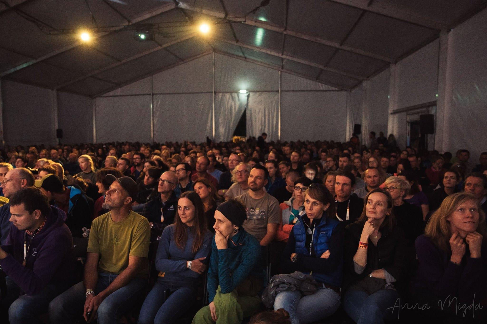
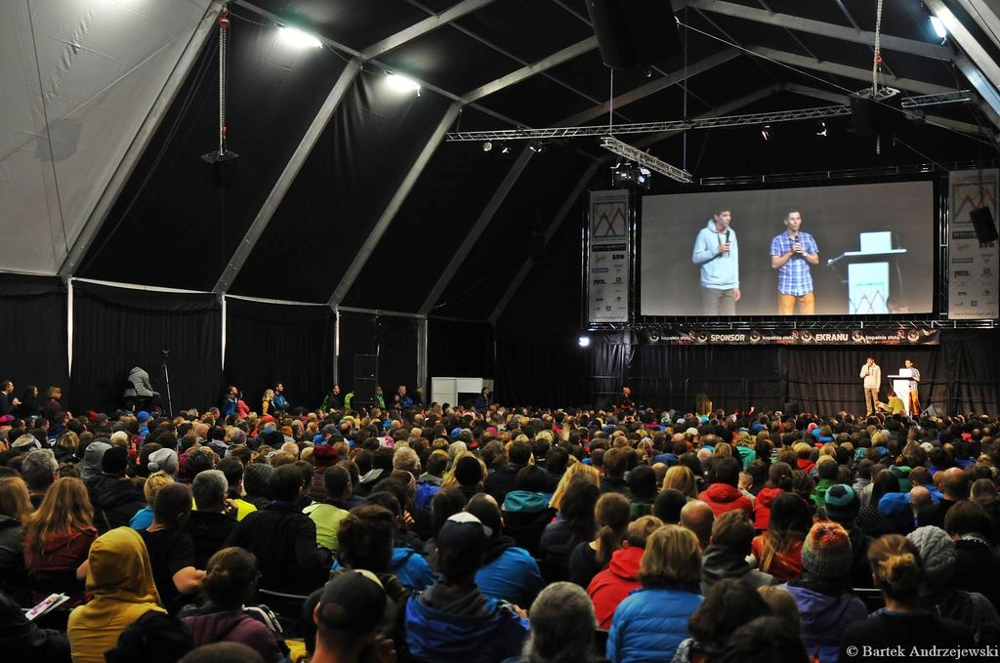

Czym pokrótce jest Przegląd Filmów Górskich im. Andrzeja Zawady?
Festiwal ten organizowany od 1995 roku, co czyni go jednym z najstarszych i najważniejszych imprez ludzi gór. Wydarzenie odbywa się co roku w przedostatnim tygodniu września w jak nazywają to miejsce sami organizatorzy "Wielkim Namiocie".

Jakie wydarzenia mogą nas zachęcić do przyjścia na festiwal?
Festiwal przede wszystkim umożliwia zobaczenie filmów obejmujących szeroko pojętą tematykę wysoko górską. Zobaczymy tam filmy dokumentalne oraz fabularne, zapisy z wypraw himalaistów, czy nawet posłuchamy szczegółowych opowiadań o zdobywaniu szczytów.
